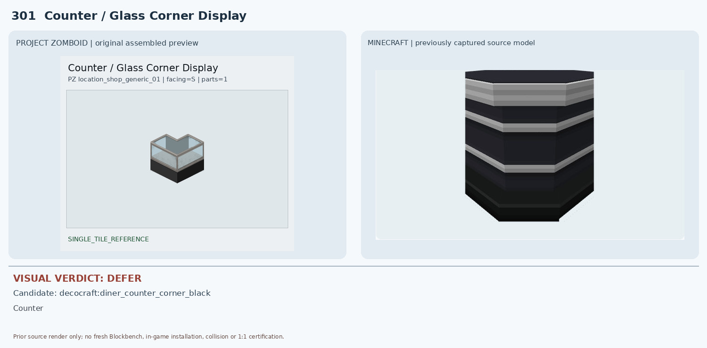
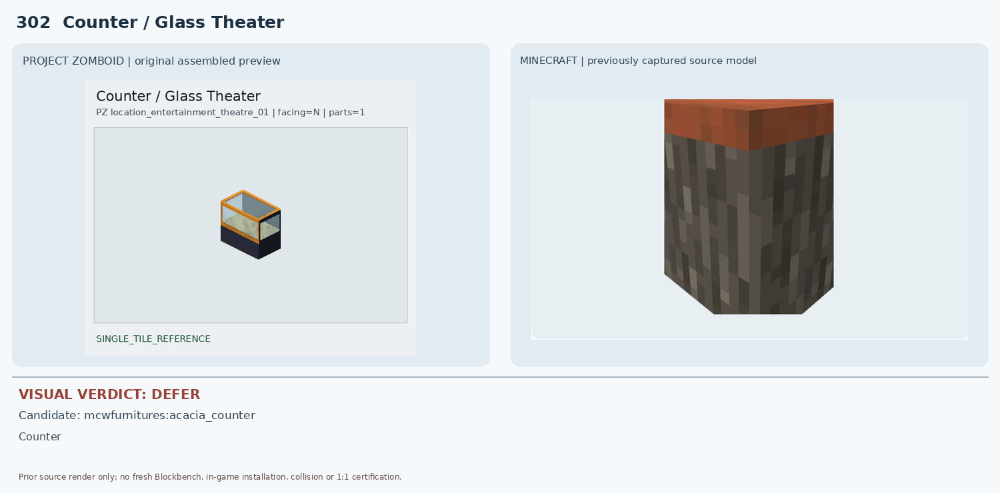
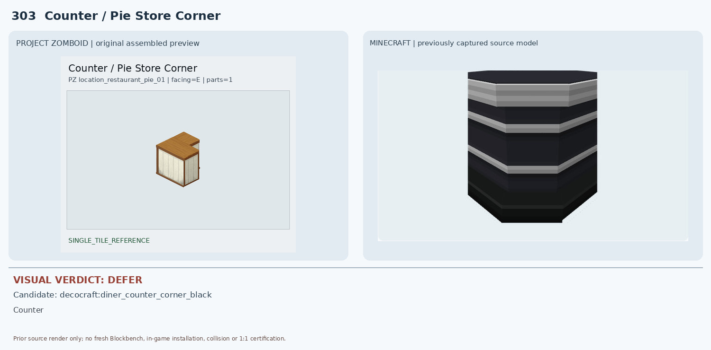
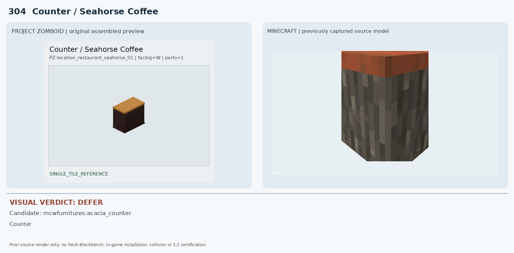
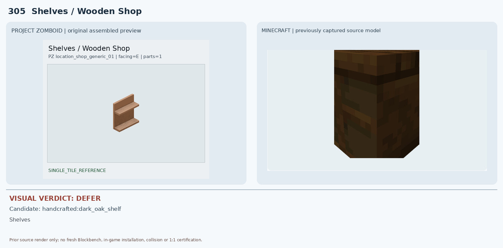
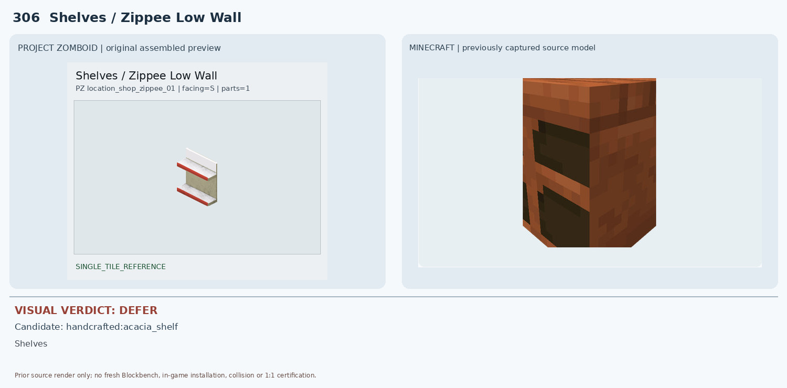
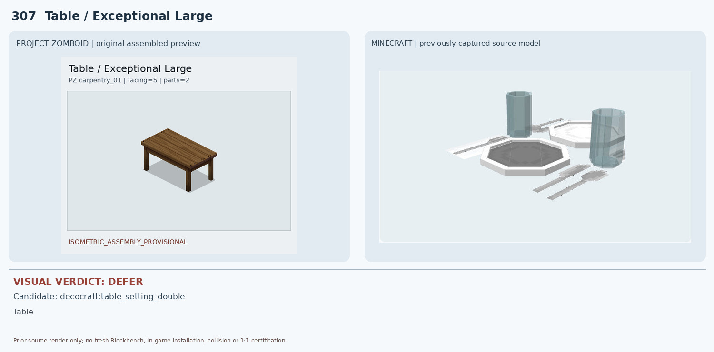
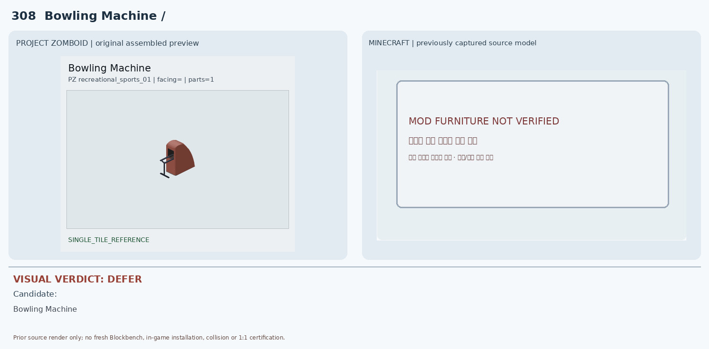
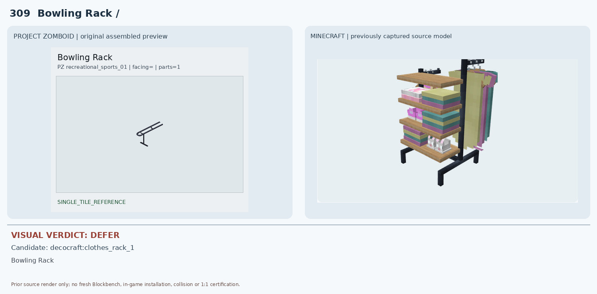
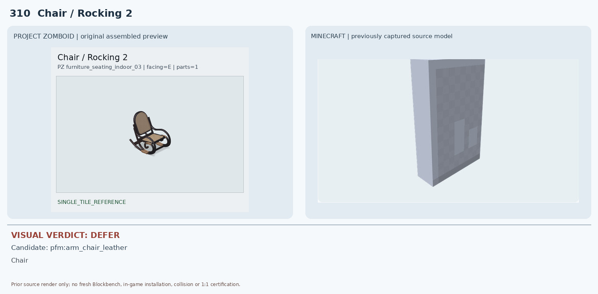

301 Counter / Glass Corner Display — DEFER

MC는 검정 본체에 은색 수평 줄무늬만 있는 불투명 다이너 카운터로 투명 유리와 열린 진열 공간이 없음
0 conditional, 10 deferred. Existing source render evidence only; no new native render or in-game certification.

MC는 검정 본체에 은색 수평 줄무늬만 있는 불투명 다이너 카운터로 투명 유리와 열린 진열 공간이 없음

MC 아카시아 카운터는 회갈색 불투명 몸체와 주황색 상판으로 투명 유리·전면 개구부가 없음

MC 검정 금속 다이너 코너 카운터는 재질과 검정/은색 띠가 다르고 나무 상판과 크림색 패널이 없음

MC 아카시아 카운터는 밝은 주황 상판과 회색/갈색 거친 나무무늬 몸체로 색상·표면 질감이 다름

MC 짙은 갈색 상자형 렌더로 전면 2개 선반판과 개방된 구조가 확인되지 않음

MC는 주황/갈색 나무 질감의 단단한 상자형 선반 렌더로 흰색·빨간 테두리 및 얇은 판 구조가 없음

MC 후보는 접시·컵·포크·나이프 테이블 세팅 소품뿐이며 탁자 본체·다리·2×1 점유가 없음

MC 비교 화면에 검증된 실제 모드 모델이 없어 3D 비교 자체 불가

MC는 목재 선반·옷걸이·다색 의류가 달린 큰 의류 진열대라 사물 용도와 형상이 다름

MC 후보는 회색 평판만 보이는 부분 JSON 렌더로 의자 좌석·팔걸이·곡선 흔들다리 전혀 확인 불가